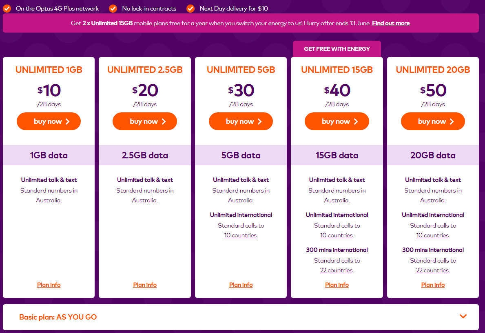

Commerce Assessment 2018
St Stanislaus College
Beginners Guide to buying a Phone Plan

.
Buying a phone plan
A phone plan is a contract/agreement between a user and a telecommunications company allowing the user access to that companies' network. Different companies offer different plans, and every company has different network coverage. There are many types of plans including SIM only, PAYG, pay all in one go, internet plans, or bundles with phones and phone plans. Phones calls and texts used to be important - you had to pay for each call or text by the minute. Nowadays, telco's offer unlimited talk and text on most of their plans, meaning you will be spending lots of money on data (internet access) while you are using the plan.
When you are looking for a phone plan you need to keep an eye on the price. Bundled data prices can vary massively betweeen telcos, and you need to look around many different plans. You shouldn't be afraid to change telcos whenever you want.
Contracts
When buying a phone plan, you need to realise that the contract is legally binding. Having said that, plans still follow Australian laws so you have your personal rights to do things such as leave a contract early, or be refunded for a plan you bought that you were misinformed about. A contract can be either not locked or a locked contract - locked contracts can be anywhere from a couple of months to 24 months. This is especially bad if you buy a phone in a plan, as not only will the company give you a lock-in contract until you pay for your phone completely, but in future that phone will be locked in to that companies network. And, it used to be illegal to manually unlock a phone from its network even after the contract ended but now the device can be unlocked only when the contract is finished.
Beware
Telco's offer various plans, but if you want to buy a phone with a phone plan you need to remember that they will keep you locked in until the plan is over - and if you want to quit before then not only will you have to pay for the phone outright you will also have to pay an exit fee, and this can be a lot of money. Try to buy plans which are sim-only, because although you need a phone already, they will often not be locked in. You also need to be very cautious about travel plans, or PAYG plans. Pay as you go rates are much higher - you pay by the call, by the text and by the number of megabytes (not gigabytes) you use. Its the same with travel plans - when travelling its much cheaper to buy a local prepaid SIM card wherever you are. If you don't watch the rates, you could lose thousands of dollars in mobile plan fees.
Choosing a provider
There are many different companies who provide network coverage around the world. Some of the biggest in Australia include Telstra, Optus and Vodaphone - other popular networks like Alidmobile or Boost simply use the same network as either Telstra or Optus. You need to check out other companies and see what they offer, this might save you lots of money. Visit This Website for more information about telcos.
Example phone plans (accurate June 2018)
Some great example phone plans for starters include these -
AldiMobile
Boost
Amaysim
Belong
Telstra